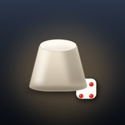

骰子
DICE
单机模式
一台手机，大家轮着玩
联机模式
各看各的手机 · 吹牛 / 350 / 找朋友

把骰子放到桌面
点图标就开 · 全屏没地址栏
v1.24.3 · 仅供朋友聚会娱乐
免责声明
单机
OFFLINE
吹牛骰子
上次玩的
有盖子 · 摇完掀盖看点数，靠嘴吹
潮汕 350
上次玩的
明骰 · 1 点 100、5 点 50，满 350 才能收
潮汕 找朋友
上次玩的
明骰 · 每人 2 颗，中间摇出谁就谁喝
v1.24.3
联机
ONLINE
换
吹牛 · 暗骰
每人 5 颗只有自己看得见 · 2~12 人
潮汕 350
各看各的手机 · 报个 4 位房号就能开局
潮汕 找朋友
每人 2 颗明骰 · 摇到谁谁喝 · 2~12 人
摆桌上 · 公共屏
一台设备摆桌中间，只看不玩、不占座位
350
THREE FIFTY
一人一台手机，各看各的屏
房号念一声，人齐就开局
上一桌还没打完
点一下回到原位
----
开一个房间
拿一个 4 位房号，念给朋友
加入房间
输入朋友给的房号
进去
v1.24.3
摆桌上
TABLE SCREEN
一台设备摆桌子中间，抬眼就能看见
谁该摇、各家几杯、刚发生了什么
房号
摆上桌
这台设备只看不玩：不占座位、不能摇骰、不参与投票
私密操作（摇骰、看自己的牌）还在各自手机上
v1.24.3
350
----
退出
重连中
连接中
…
350
THREE FIFTY
🔊
重开
----
退出
房号
----
念给朋友 · 4 位数字
开始
我来了 · 摇
0
本回合
满 350 才能收手 · 封顶 700
踢出房间
算了
v1.24.3
记录
玩法说明
本局记录
越往下越新 · 最多留 30 条
知道了
🔊
吹牛骰子
LIAR'S DICE
5 颗
已锁定
点「摇一摇」开始这一局
v1.24.3
玩法说明
调试功能
仅本机生效 · 点了只装填，摇一摇才生效 · 仅一次
一键豹子
点一下随机一个 · 摇一摇生效
开盖后点骰改点
掀开后连点两下同一颗骰子，点数 +1 · 长期有效
骰盅下方隐形区
开启后，点骰盅下方左 / 中 / 右三格才有效 · 默认关闭
音效
完成
🔊
350
THREE FIFTY
重开
4 人
1 号 · 锁 450 分
轮到 2 号
还剩 2 位没锁
我来了 · 摇
0
本回合
满 350 才能收手 · 封顶 700
v1.24.3
玩法说明
🔊
找朋友
ZHAO PENGYOU
重开
6 人
第 1 轮
1 号摇
公骰
轮到
1 号
· 摇中间的 2 颗
v1.24.3
玩法说明
找朋友 · 联机
ZHAO PENGYOU
以
你
的身份进房 · 名字在「联机」首页改
上一桌还没打完
点一下回到原位
----
房号
进房
开一桌（2~12 人）
点数在服务器摇，手机只能喊「我要摇」
每把每人只摇 1 次，公骰一摇就锁
v1.24.3
大厅
LOBBY
退出
复制房号
----
正在进房…
开局
🔊
找朋友
联机 · 明骰
退出
0000
第 1 轮
1 号摇
公骰
等各家摇完
v1.24.3
记录
桌上的人
玩法说明
连接断了 · 正在重连
本局记录
桌上的人
知道了
调试功能
只对这台手机生效 · 第 4 项会动整桌
总
隐藏五格
总闸 · 关掉会连后面五项一起关
1
避雷区 6~9 点
换下一人前一直生效，或直接关闭
2
公骰避开自己点数
换下一人前一直生效，或直接关闭
3
公骰随机出 11 正豹
约三成 · 换下一人前一直生效，或直接关闭
4
整桌点数尽量不重复
七成人 · 别人的牌也会变
5
必中避己
这一把第一次摇公骰必点到别人、不点自己
点一下开、再点一下关，随时能停 · 换人（下一把）自动清零 · 牌桌中段那五格是快捷键（要先开总闸）
收起
吹牛 · 联机
LIAR'S DICE
以
你
的身份进房 · 名字在「联机」首页改
上一桌还没打完
点一下回到原位
----
房号
进房
开一桌（2~12 人）
每人
5 颗暗骰
，只有自己看得见 —— 别人的牌连手机都拿不到， 开的那一刻才一起摊开。桌上公开的只有「谁叫了什么」。
v1.24.3
大厅
LOBBY
退出
复制房号
----
正在进房…
开局
玩法说明
🔊
吹牛
联机 · 暗骰
退出
0000
第 1 局
—
开叫
—
我的牌
—
全场一共
—
v1.24.3
记录
桌上的人
玩法说明
本局记录
桌上的人
知道了
连接断了 · 正在重连
调试功能
只在这台手机上生效 · 点了只装填，摇一摇才出点 · 仅一次
未装填 · 点下面任一项，摇一摇才生效
一键豹子
随机形态 · 摇一摇生效
开盖后点骰改点
掀开后连点两下同一颗骰子，点数 +1 · 长期有效
骰盅左边三格
上 顺子 · 中 点骰改点 · 下 豹子
音效
完成
请出房间
算了
玩法说明
关闭
免责声明与使用条款
关闭
把骰子放到桌面
关闭
退出这一桌？
座位会让出来，桌上的人接着玩
退了就不能凭房号回到原位了
只是暂时离开？点左上角 ←
座位留着，回来还能续上
退出这一桌
算了